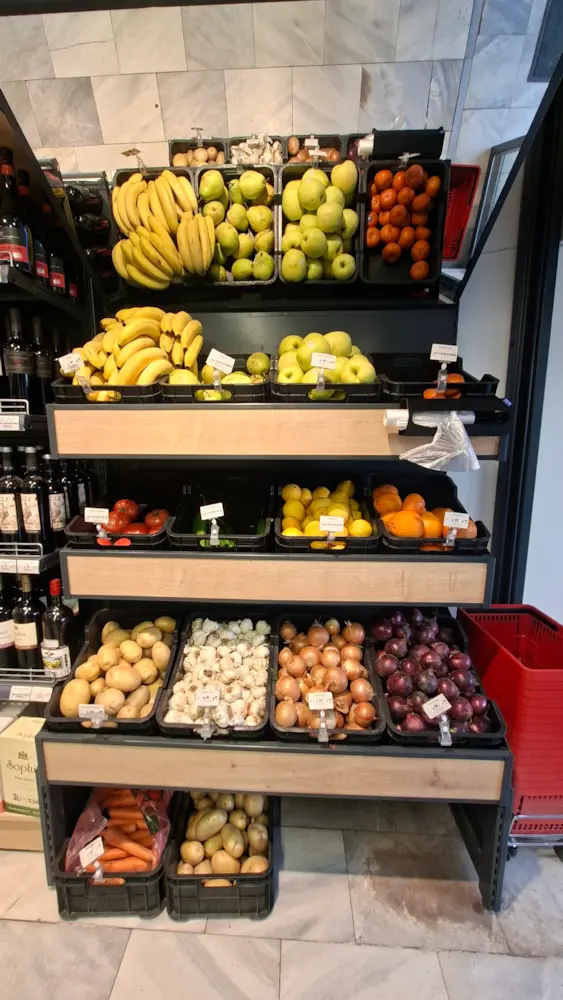

Магазин за плодове и зеленчуци близо до вас
В Супермаркет "Живков" знаем колко е важно храната на масата да бъде качествена. Затова всяка сутрин зареждаме нашия щанд с пресни плодове и зеленчуци. Стараем се да предлагаме родна българска стока, свежи салати, подбрани сортове домати и краставици, както и винаги пресни плодове за децата. Заповядайте на място в магазина ни в село Рударци (обл. Перник) и изберете най-доброто!

Български домати
Розови и червени сортове, идеални за салата
Пресни краставици
Хрупкави, български, за салата и туршия
Чушки капия
Сочни и сладки, за печене и салати
Български ябълки
Златна превъзходна, червени сортове
Картофи
Ронливи, български, за варене и печене
Моркови
Пресни, български, за супи и салати
Ягоди
Ароматни, български, сезонни
Лук
Кромид и пресен лук, български
Тиквички
Млади и свежи, за готвене и печене
Патладжан
За печене, готвене и кьопоолу
Зеле
Прясно и кисело зеле за салата и готвене
Спанак
Листен и свеж, за баници и готвене
Магданоз
Връзка пресен магданоз
Банани
Внос, пресни и ароматни
Портокали
Сочни и сладки, за сок и консумация
Лимони
Пресни, за чай и готвене
Важно за наличността: Асортиментът ни се променя според сезона и ежедневните доставки. Някои продукти може временно да не са налични. Питайте нашите продавач-консултанти – те с радост ще ви кажат какво е прясно днес!
Предлагаме и други сезонни плодове и зеленчуци. Асортиментът ни варира според доставките и сезона – ако търсите нещо конкретно, питайте на място в магазина ни в село Рударци! Очакваме ви всеки ден от 6:00 до 20:30 ч.